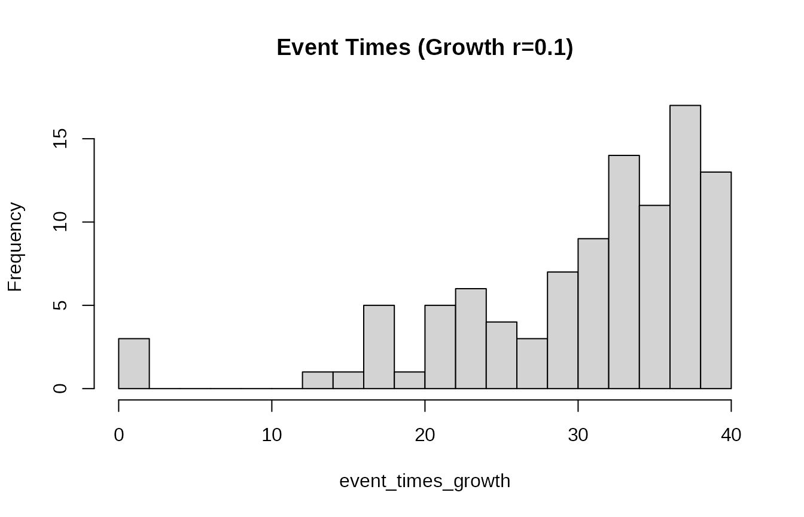
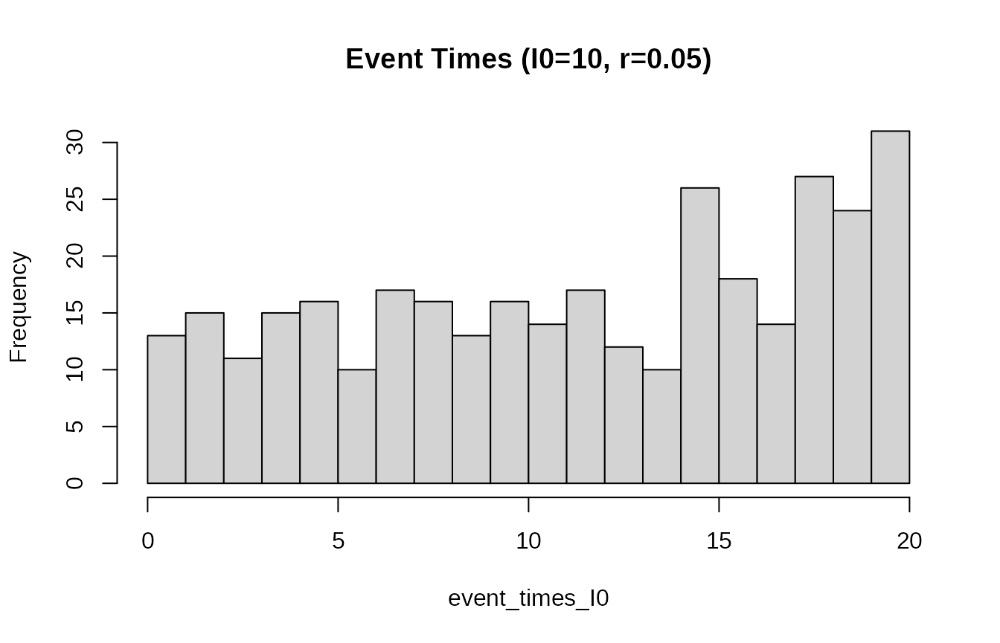
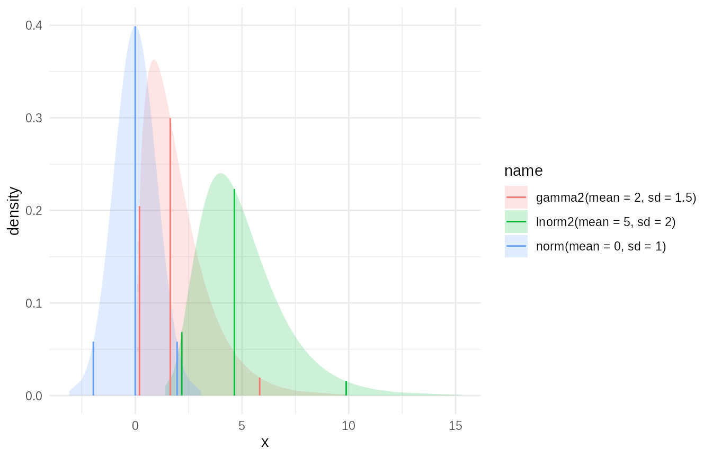
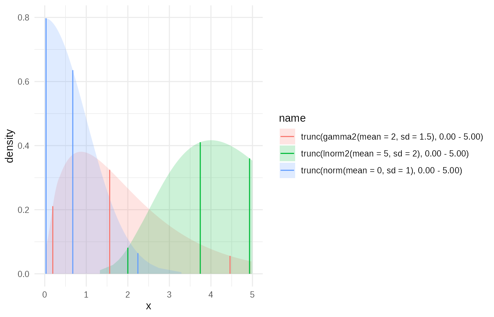
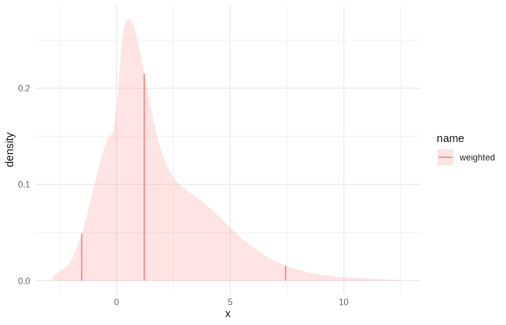
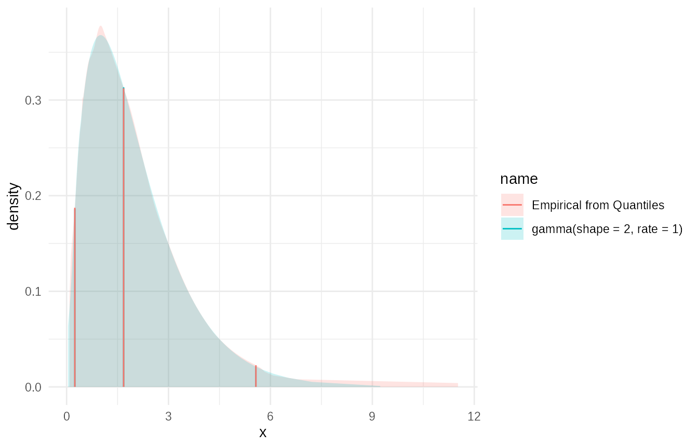
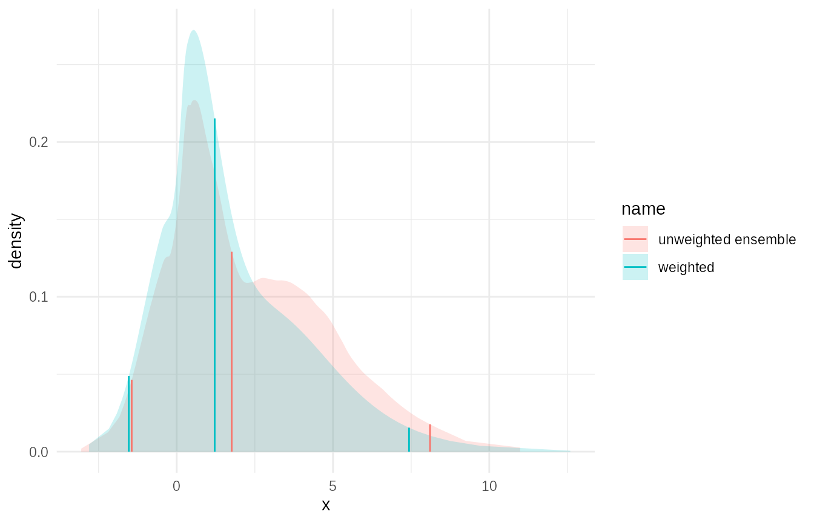
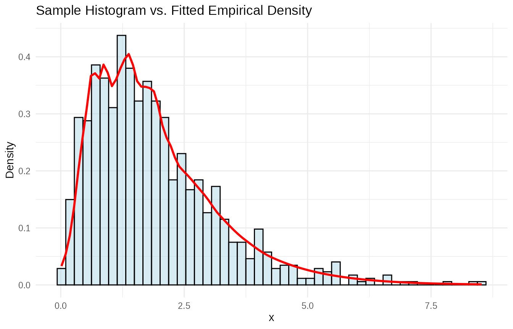
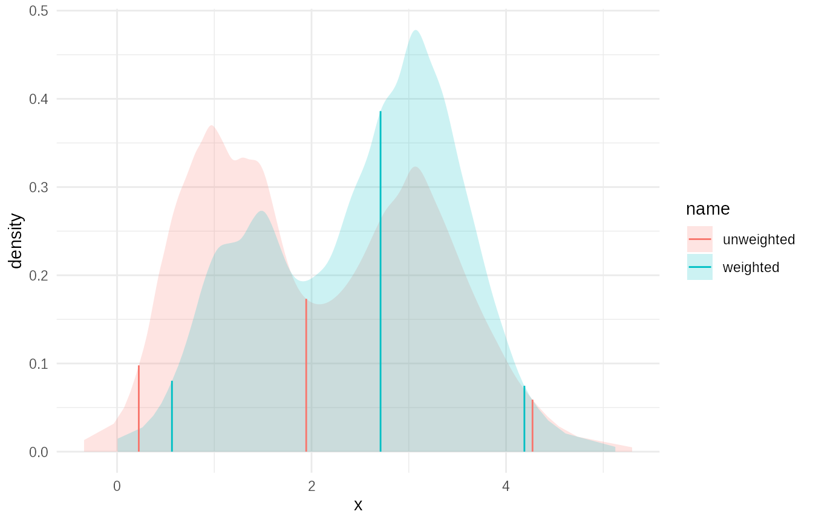

library(tidyabc)
#>
#> Attaching package: 'tidyabc'
#> The following objects are masked from 'package:base':
#>
#> transform, truncate
library(dplyr)
#>
#> Attaching package: 'dplyr'
#> The following objects are masked from 'package:stats':
#>
#> filter, lag
#> The following objects are masked from 'package:base':
#>
#> intersect, setdiff, setequal, union
library(ggplot2)
ggplot2::set_theme(theme_minimal())Introduction
There are parts to this vignette. A description of extra distribution
functions available in tidyabc and explanation of the
dist_fns S3 class which collects statistical distribution
functions for use as a single entity.
Reparameterised statistical distributions
The tidyabc package provides several useful probability
distribution functions beyond the standard R families available through
stats. These are particularly handy for modelling scenarios
common in ABC workflows, offering convenient parametrizations (e.g., by
mean and standard deviation) or specific support ranges.
Core Functions
Like standard R distributions (e.g., stats::dnorm,
stats::pnorm), these custom families provide four main
types of functions:
-
dXXX(x, ...): Density (PDF) or Probability Mass (PMF) function. -
pXXX(q, ...): Cumulative Distribution Function (CDF). -
qXXX(p, ...): Quantile function (inverse CDF). -
rXXX(n, ...): Random number generation function.
Selected Examples
Here are examples of a few key families available in
tidyabc:
1. Logit-Normal (logitnorm /
logitnorm2)
A distribution supported on (0, 1), useful for modelling
probabilities or proportions. The logitnorm2 family
parametrizes via the median (prob.0.5) and a dispersion
parameter (kappa).
# Density at x=0.7 with median 0.6 and low dispersion
dlogitnorm2(0.7, prob.0.5 = 0.6, kappa = 0.2)
#> [1] 1.198863
# CDF value at q=0.5
plogitnorm2(0.5, prob.0.5 = 0.6, kappa = 0.2)
#> [1] 0.034604
# Generate 5 random samples
rlogitnorm2(5, prob.0.5 = 0.6, kappa = 0.2)
#> [1] 0.5232468 0.6507264 0.6135923 0.5451227 0.46545652. Beta (beta2)
Another distribution supported on (0, 1), re-parametrized for mean
(prob) and a coefficient of variation (kappa),
useful for modelling uncertainty around a central probability.
# Density at x=0.3 with mean 0.3 and variability 0.1
dbeta2(0.3, prob = 0.3, kappa = 0.1)
#> [1] 18.08818
# Quantile for the 90th percentile
qbeta2(0.9, prob = 0.3, kappa = 0.1)
#> [1] 0.3284255
# Generate 5 random samples
rbeta2(5, prob = 0.3, kappa = 0.1)
#> [1] 0.2979052 0.2862110 0.3194007 0.2763879 0.28840793. Gamma (gamma2,
cgamma)
Distributions supported on (0, ∞). gamma2 is
parametrized by mean and standard deviation. cgamma is a
“convex” gamma (mean > standard deviation), useful for positive
variables with a defined mode.
# Density at x=6 for a gamma with mean=5, sd=2
dgamma2(6, mean = 5, sd = 2)
#> [1] 0.1468682
# Quantile for the 75th percentile for convex gamma
qcgamma(0.75, mean = 3, kappa = 0.4) # kappa is coef. of variation here
#> [1] 3.975408
# Generate 5 random samples from gamma2
rgamma2(5, mean = 5, sd = 2)
#> [1] 3.102579 4.073661 5.531429 3.104214 2.0032454. Wedge (wedge)
A distribution supported on [0, 1] with a linear probability density
function. The a parameter controls skewness (a=0 is
uniform, a>0 is right-skewed, a<0 is left-skewed).
List of Additional Families
-
logitnorm,logitnorm2 wedgebeta2-
lnorm2(Log-Normal) -
gamma2,cgamma(Convex Gamma) -
nbinom2(Negative Binomial) -
null(Always returnsNA- viarnull,pnull, etc.)
These functions can be used directly in R for calculations,
simulations, or defining priors before wrapping them into
dist_fns objects.
Specialized Random Number Generators
tidyabc also provides specific functions designed
primarily for random sampling, which are particularly useful for forward
simulation within ABC workflows.
1. Bernoulli (rbern)
Generates logical values (TRUE/FALSE) based
on a probability of success.
# Simulate 10 Bernoulli trials with prob=0.3
rbern(10, prob = 0.3)
#> [1] FALSE FALSE FALSE FALSE TRUE TRUE FALSE FALSE FALSE FALSE2. Categorical (rcategorical)
Generates random samples from a multinomial-like distribution over a set of named or numbered categories, based on provided probabilities.
# Define probabilities for categories "A", "B", "C"
probs <- c("A" = 0.1, "B" = 0.3, "C" = 0.6)
# Sample 5 categories according to the probabilities
rcategorical(5, prob = probs)
#> [1] "A" "C" "C" "C" "C"
# Sample 5 categories and return them as a factor
rcategorical(5, prob = probs, factor = TRUE)
#> [1] B C B B C
#> Levels: A B C3. Exponential Growth Process Times (rexpgrowth,
rexpgrowthI0)
These functions sample event times from an exponentially growing (or decaying) process. This is useful for simulating arrival times, infection times, or other phenomena where the underlying rate changes exponentially over time.
-
rexpgrowth(n, r, t_end, t_start): Generatesnevent times assuming an exponential growth raterover the interval[t_start, t_end]. -
rexpgrowthI0(I0, r, t_end, t_start): Generates event times aiming for an expected initial number of eventsI0in the first unit of time, given the growth rater.
# Example: Simulate 100 event times from a process growing at rate 0.1
# over the interval [0, 40]
event_times_growth <- rexpgrowth(100, r = 0.1, t_end = 40, t_start = 0)
hist(event_times_growth, breaks = 20, main = "Event Times (Growth r=0.1)")
# Example: Simulate event times aiming for an initial rate of 10 events per day
# over 20 days with a growth rate of 0.05
event_times_I0 <- rexpgrowthI0(I0 = 10, r = 0.05, t_end = 20, t_start = 0)
hist(event_times_I0, breaks = 20, main = "Event Times (I0=10, r=0.05)")
These functions provide convenient ways to model specific random processes often encountered in simulation models used with ABC.
Distribution family S3 class:
The dist_fns S3 class in tidyabc provides a
powerful and unified interface for working with probability
distributions. It encapsulates the core statistical functions (CDF
p, quantile q, density d, random
r) into a single object, enabling flexible creation,
manipulation, and analysis. This vignette demonstrates how to create
dist_fns objects from standard families, manipulate them
within data frames using tidyverse principles, fit
empirical distributions from data or quantiles, and combine them into
mixtures.
Creating dist_fns Objects
From Standard Families
The most straightforward way to create a dist_fns object
is from standard R distribution families using
as.dist_fns().
# Create a single normal distribution object
norm_dist <- as.dist_fns("norm", mean = 4, sd = 3)
print(norm_dist)
#> norm(mean = 4, sd = 3); Median (IQR) 4 [1.98 — 6.02]
# Access its functions directly
norm_dist$p(5) # CDF at x=5
#> [1] 0.6305587
norm_dist$q(0.95) # 95th percentile
#> [1] 8.934561
norm_dist$r(5) # Generate 5 random samples
#> [1] 6.916409 4.776708 7.622407 3.191541 1.905080Creating Multiple Distributions with pmap_dist_fns
You can create a list of dist_fns objects, each
with different parameters. This is efficiently done using
pmap_dist_fns() within a dplyr::mutate() call,
mapping parameter values from columns of a data frame.
# Define a data frame with parameters for different families
param_df <- tibble(
id = 1:3,
family = c("norm", "gamma2", "lnorm2"),
mean = c(0, 2, 5),
sd = c(1, 1.5, 2)
)
# Use pmap_dist_fns to create a list column of dist_fns objects
dist_df <- param_df %>%
mutate(
dist_obj = pmap_dist_fns(
.,
function(family, mean, sd, ...) as.dist_fns(family, mean, sd)
)
)
# N.b. annoyingly RStudio does not use the default pillar printer and the
# details do not show up when rendering a tibble in RStudio
print(dist_df)
#> # A tibble: 3 × 5
#> id family mean sd
#> <int> <chr> <dbl> <dbl>
#> 1 1 norm 0 1
#> 2 2 gamma2 2 1.5
#> 3 3 lnorm2 5 2
#> # ℹ 1 more variable: dist_obj <distfn[]>This pattern is intended for scenarios like storing prior distributions or posterior approximations for multiple parameters within a single data frame.
Plotting distributions together is managed with the plot
function which can be modified with ggplot commands.
plot(dist_df$dist_obj)
Manipulating dist_fns Objects in Data Frames
Once dist_fns objects are stored in a data frame column,
you can manipulate them using map_dist_fns() or standard
purrr/dplyr functions.
Applying Transformations: Truncation Example
You can apply transformations like truncate() to
dist_fns objects stored in a column.
# Truncate each distribution from the previous example to be positive
dist_df_truncated <- dist_df %>%
mutate(
dist_truncated = map_dist_fns(dist_obj, ~ truncate(.x, x_left = 0, x_right = 5))
)
# Plot the truncated versions of the distributions
plot(dist_df_truncated$dist_truncated)
Combining dist_fns: Mixture Distributions
A powerful feature is creating mixture distributions from a list of
dist_fns objects, for example, using
dplyr::summarise().
# Create a list of different distribution objects (e.g., representing different scenarios/models)
mix_df = dist_df %>%
# Assign weights to each component
mutate(weights = c(0.4, 0.4, 0.2)) %>%
summarise(
mix = c(mixture(dist_obj, weights = weights, name="weighted"))
)
#> Warning: There was 1 warning in `summarise()`.
#> ℹ In argument: `mix = c(mixture(dist_obj, weights = weights, name =
#> "weighted"))`.
#> Caused by warning in `empirical_cdf()`:
#> ! CDF was not stricly increasing. Ignoring invalid points.
mixture_dist = mix_df$mix
# Plot the mixture
plot(mixture_dist)
# Evaluate the mixture CDF
mixture_dist$p(c(0, 1, 2, 3, 4))
#> [1] 0.2001710 0.4509674 0.6336441 0.7431442 0.8298949Fitting Empirical Distributions
tidyabc provides robust tools for fitting empirical
distributions from data or quantiles.
From Quantiles using empirical_cdf
If you have quantile values (e.g., from another distribution or simulation output), you can fit an empirical CDF. This takes a link parameter which lets you easily define support for the empirical CDF. The resulting fit will impute the tails of the distribution to prevent truncation.
# Example: Fit an empirical distribution to quantiles of a known distribution
target_dist <- as.dist_fns("gamma", shape = 2, rate = 1)
# Define probability points
p_points <- c(0.025, 0.05, 0.1, 0.25, 0.5, 0.75, 0.9, 0.95, 0.975)
# Get corresponding quantiles
q_values <- target_dist$q(p_points)
# Fit an empirical distribution using these quantiles
empirical_from_quantiles <- empirical_cdf(x = q_values, p = p_points, link = "log", name = "Empirical from Quantiles")
# Compare the original and fitted
plot(c(target_dist,empirical_from_quantiles))
Ensemble of Quantile-Based Distributions as a Mixture
You can create an ensemble of such quantile-based fits and combine them into a mixture.
# From previous example we create a data frame with quantiles in it
quantile_df = dist_df %>%
mutate(
quantiles = purrr::map(dist_obj, ~ .x$q(p_points))
) %>%
select(-dist_obj)
# now if this was our input we could fit empirical distributions:
# N.B. We could do this with a grouped data frame.
ensemble_df = quantile_df %>%
mutate(
emp_cdf = map_dist_fns(quantiles, function(q) empirical(x=q,p = p_points))
) %>%
summarise(
ensemble = c(mixture(emp_cdf,name = "unweighted ensemble"))
)
plot(c(ensemble_df$ensemble, mixture_dist))
From Samples using empirical_data
For fitting directly from sample data (e.g., MCMC output, simulation
results), use empirical() or
empirical_data().
# Generate sample data from a distribution
set.seed(123)
sample_data <- rgamma(1000, shape = 2, rate = 1)
# Fit an empirical distribution to the samples
empirical_from_samples <- empirical(
x = sample_data, name = "Empirical from Samples", bw=0.25)
# Compare the sample histogram with the fitted density
tibble(sample = sample_data) %>%
ggplot(aes(x = sample)) +
geom_histogram(aes(y = after_stat(density)), bins = 50, alpha = 0.5, fill = "lightblue", color = "black") +
stat_function(fun = empirical_from_samples$d, color = "red", linewidth = 1) +
labs(title = "Sample Histogram vs. Fitted Empirical Density", x = "x", y = "Density")
Weighted Sample Fitting
empirical() also handles weighted samples,
which is crucial in methods like ABC where particles have importance
weights.
# Simulate weighted samples (e.g., importance sampling output)
set.seed(456)
n_samples <- 500
raw_samples <- c(
rnorm(n_samples / 2, mean = 1, sd = 0.5),
rnorm(n_samples / 2, mean = 3, sd = 0.7)
)
# Simulate some weights (e.g., importance weights)
# these are correlated to the distance from 3, which for example might be the
# true value
weights <- runif(n_samples, min = 0.1, max = 2.0) * exp(-((raw_samples - 3)/2)^2)
# Normalize weights (often done automatically internally, but good practice)
weights <- weights / sum(weights)
# Fit empirical distribution from weighted samples
empirical_weighted <- empirical(
x = raw_samples, w = weights,
name = "weighted", bw=0.25
)
empirical_unweighted <- empirical(
x = raw_samples,
name = "unweighted", bw=0.25
)
# Plot the fitted distribution
plot(c(empirical_weighted,empirical_unweighted))
Using wquantile for Quantiles from Weighted Data
The approach above can give you quantiles from the data. It is however fairly heavyweight if you know you are only going ot need a few quantiles from the weighted data.
The wquantile() function provides a quicker way to
estimate quantiles from weighted data, including use of link functions,
using a similar but less complex approach to empirical. In
this case agreement is close but not perfect
# Calculate specific quantiles from the weighted samples using wquantile
weighted_quantiles <- wquantile(
p = c(0.025, 0.25, 0.5, 0.75, 0.975), # Common quantiles
x = raw_samples,
w = weights,
link = "log", # Use identity link for unbounded support, or specify prior support
)
#> Warning in log(.x): NaNs produced
print(tibble(Probability = c(0.025, 0.25, 0.5, 0.75, 0.975), Quantile = weighted_quantiles))
#> # A tibble: 5 × 2
#> Probability Quantile
#> <dbl> <dbl>
#> 1 0.025 0.526
#> 2 0.25 1.61
#> 3 0.5 2.75
#> 4 0.75 3.29
#> 5 0.975 4.19
# Compare with quantiles from the fitted empirical distribution (which used the same weighted data)
fitted_quantiles <- empirical_weighted$q(c(0.025, 0.25, 0.5, 0.75, 0.975))
print(tibble(Probability = c(0.025, 0.25, 0.5, 0.75, 0.975), Quantile_Fitted = fitted_quantiles))
#> # A tibble: 5 × 2
#> Probability Quantile_Fitted
#> <dbl> <dbl>
#> 1 0.025 0.565
#> 2 0.25 1.68
#> 3 0.5 2.71
#> 4 0.75 3.28
#> 5 0.975 4.19
# Values should be similar.
# Choices regarding the degree of smoothing will affect the exact answer.Conclusion
The dist_fns class provides a flexible and consistent
way to represent, manipulate, and combine probability distributions in
R, especially within a tidyverse workflow. Its integration
with data frames allows for powerful batch operations and storage of
complex distributional information. The empirical fitting capabilities
make it suitable for approximating complex distributions derived from
data or simulation results, including handling weighted samples common
in Bayesian and ABC methods.